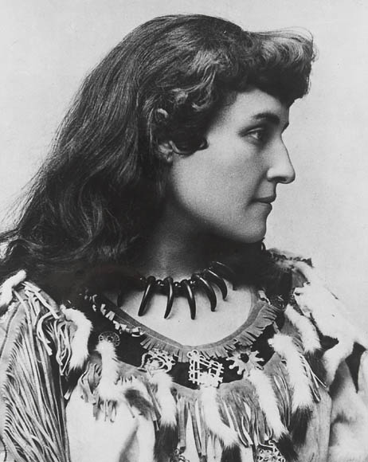
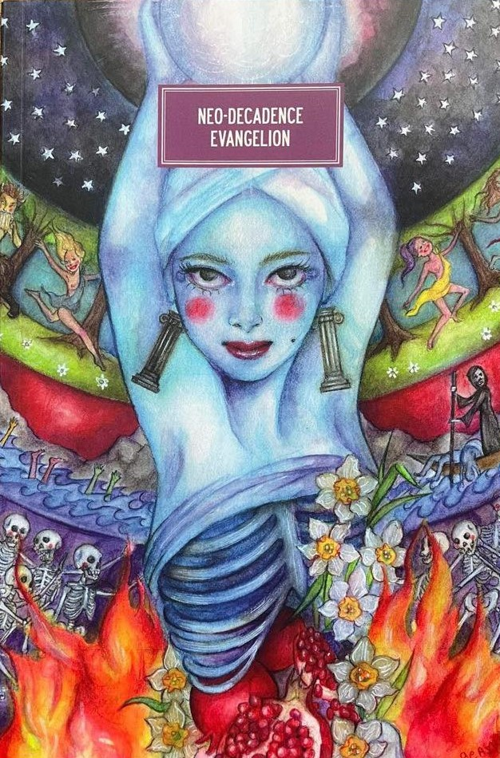
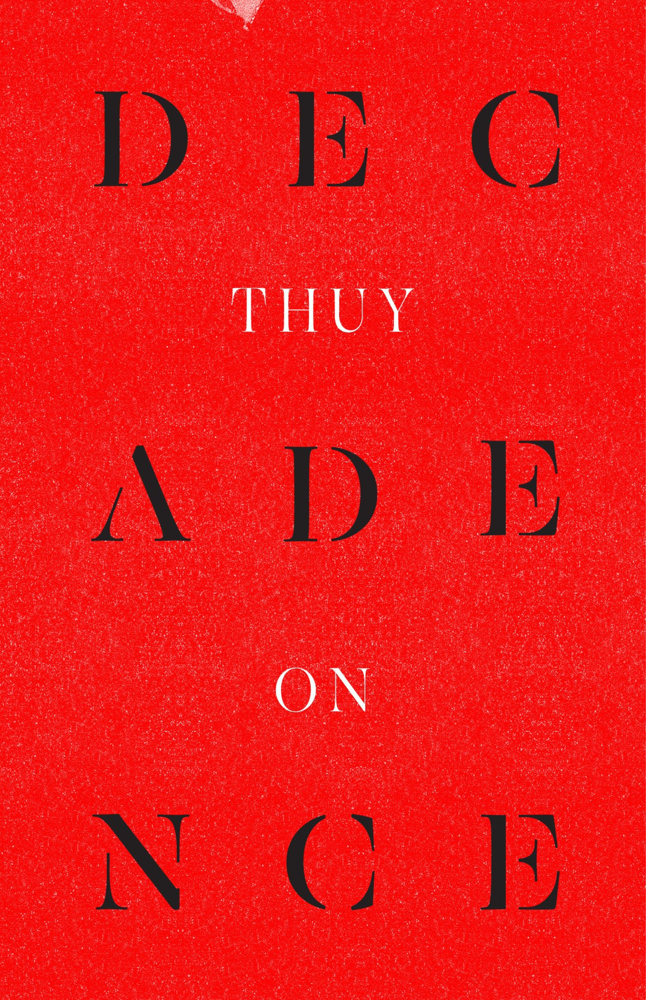
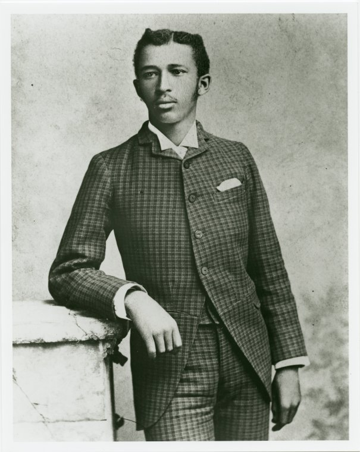
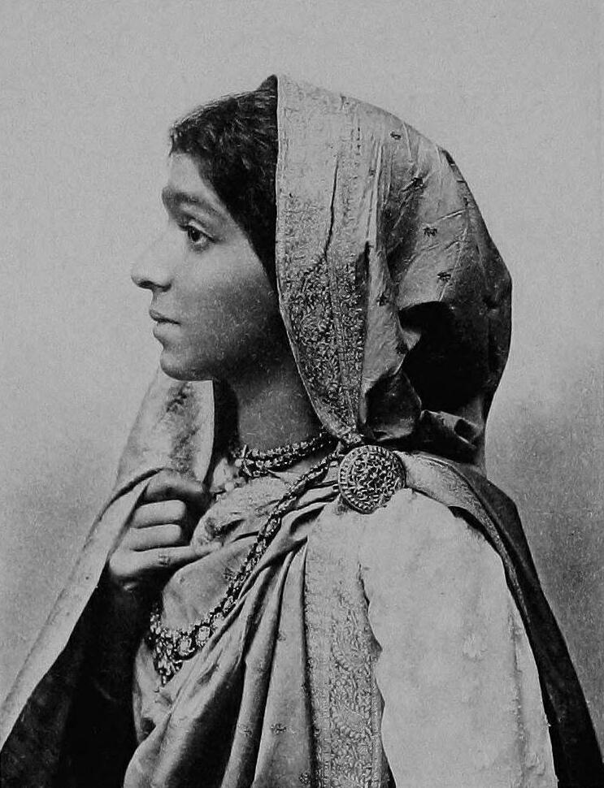
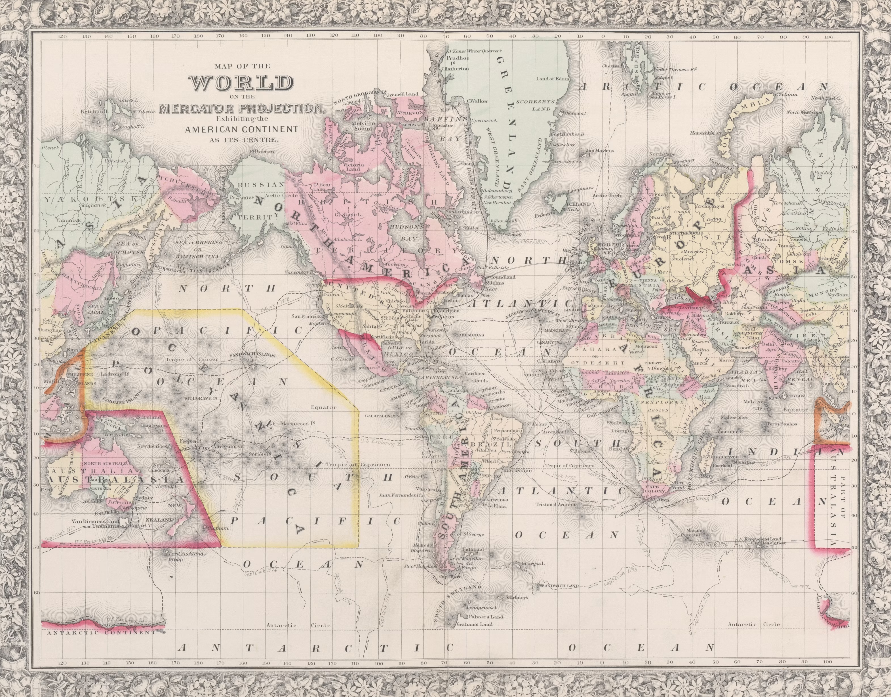

2026 (forthcoming) "Postcolonial Tragedy and Victorian Poetry," Victorian Poetry (Peer-Reviewed Journal Article)
This article brings Jamaican academic David Scott's framework of postcolonial tragedy in Conscripts of Modernity (2004) to bear on the poetry of Canadian-Mohawk writer E. Pauline Johnson Tekahionwake, in order to offer a model for how future critics might approach other writers who are like Johnson. It also explores the cultural politics behind the broad category of "Victorian" poetry, which is how academics often conceptualize Johnson's work. The article is part of a special issue of papers about new directions in the study of Victorian poetry, selected for publication from the North American Victorian Studies Association's Annual Conference.
2026. "Imperial Extraction and Decadent Beauty" (Vcologies Article Workshop and Conference Paper for the British Association for Decadence Studies Symposium)
This paper draws on scholarship from postcolonialism and the environmental humanities to explore how European decadent literature's investment in decorative excess such as jewels and rare fabrics in the 19th century is not only owed to mineral extraction in the colonies, but how the authors of this literature were aware of, and troubled by, this colonial entanglement. The paper explores these issues by juxtaposing a short story written by a European decadent writer with a memoir from Southeast Asia. An excerpt was presented at the British Association for Decadence Studies symposium at Goldsmiths, University of London, and will be workshopped at a Vcologies (Victorian Ecology Studies) gathering.

2026. Global Neo-Decadence, Postcolonialism, and the Hyper-Digital Hysterical Sublime of Late Capitalism,” Humanities (Peer-Reviewed Journal Article)
This article explores how the literary style and political preoccupations of decadence (which is commonly associated with the 19th century) has evolved in contemporary literature from a postcolonial perspective, especially in the loosely defined Neo-Decadent Movement. It focuses on two short stories set in Iran and Peru in order to examine the movement's broad engagement with our late capitalist and hyper-digitized century. It is part of a special issue of papers about the global reinvention of decadent style.

2025. Decadence Today: Volutes, Unfurling Flowers, and Decolonial Excesses in Shola von Reinhold’s LOTE and Thuy On’s Decadence,” Zeitschrift für Anglistik und Amerikanistik (Peer-Reviewed Journal Article)
This article explores how the literary style and political preoccupations of decadence (which is commonly associated with the 19th century) has evolved in contemporary literature from a decolonial perspective. It focuses on a novel and a poetry collection that engages with the Black and Asian diasporas. It is part of a special issue of papers about decadent style across time.
2024. Race and Decadence: Charles Baudelaire, Jeanne Duval, A.C. Swinburne and Afro-Asian Ornamentalism in the Global Nineteenth Century," Victorian Studies (Peer-Reviewed Journal Article)
This article explores how the birth of decadent style in the 19th century amongst French and British men such as Charles Baudelaire and Algernon Charles Swinburne stems from their troubled racial and gendered engagement with a Haitian creole woman, Jeanne Duval. She was Baudelaire's lover in Paris for 20 years, though her role in his life and literature was disregarded due to the Eurocentric nature of academia. This article draws on scholarship from Black Studies and Asian Diaspora studies in order to retrieve Duval's importance to our understanding of decadent literature. This work is drawn from my first book project, and is a part of a special issue of papers selected for publication from the North American Victorian Studies Association's Annual Conference.

2024. "Whimsical. Suggestive. Slight: The Quare Dandyism of W.E.B. Du Bois." (2024 Northeast Victorian Studies Association Expanding the Field Essay Prize, Honorable Mention.)
This unpublished essay explores Du Bois's engagement with dandyism—a key branch of decadent art and literature— through his unpublished manuscripts, public-facing essays, and archival photographs. Drawing on scholarship from queer-of-color critique and Black studies, the essay argues that Du Bois's early dandyism informs his creative-critical essays about racial equality in The Souls of Black Folk (1903). It is drawn from my first book project and received the Honorable Mention for the NVSA prize.

2021. "Symbolism, Empire, and the Dance: On Sarojini Naidu’s “Eastern Dancers” and Arthur Symons’s “Javanese Dancers."Volupté: An Interdisciplinary Journal of Decadence Studies. (Peer-Reviewed Journal Article & 2021 British Association for Decadence Studies Postgraduate Essay Prize Recipient)
This article compares and contrasts Indian Anglophone poet Sarojini Naidu with Welsh poet Arthur Symons in order to demonstrate how each of them engage with decadent style in the 19th century, and how those engagements are entangled with concerns about race, Orientalism, gender, and queer desire. It is drawn from an early Master's thesis that received the Millicent Bell Prize from the Department of English at New York University and later received (in its revised form) the 2021 British Association for Decadence Studies Postgraduate Essay Prize.

"Solidarities and Shifting Alliances." Guest Co-Editor (with Charlotte Legg), Special Issue for Global Nineteenth-Century Studies
Drawn from the Society for Global Nineteenth Century Studies symposium at the University of London Institute in Paris, this special issue will invite papers that reflect on how new forms of community were built, embraced, or rejected in the 19th century. CFP forthcoming.
"Digital Decadence." Guest Co-Editor (with Sandra Leonard), Special Issue for Volupté: An Interdisciplinary Journal of Decadence Studies.
Responding to the rise of AI and new work in Decadence Studies about the relationship between the digital world and decadence, this special issue will invite papers that explore the theme of digital decadence in the contemporary age. CFP forthcoming.